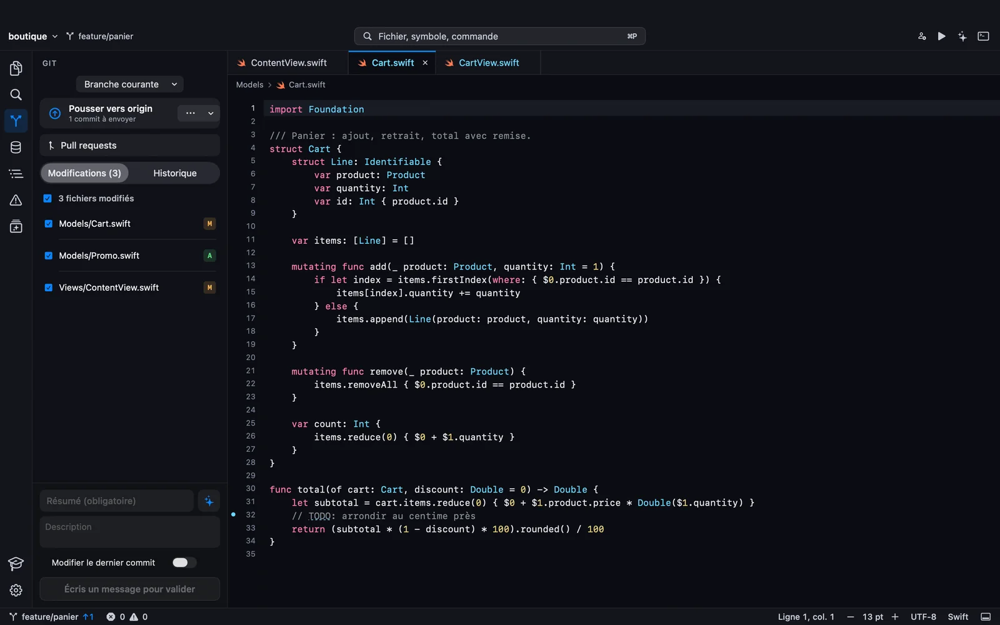

La vitesse du natif
Écrit en Swift, avec le moteur de texte d’Apple. iCode s’ouvre tout de suite, consomme peu et défile sans à-coups, même sur un gros fichier.

Ouvre n’importe quel projet, dans n’importe quel langage. Un éditeur natif et rapide, un vrai terminal, ton code lancé en un clic, Git façon GitHub Desktop et l’IA de ton choix. Sans bac à sable, sans compromis.
Gratuit · macOS 14 ou plus récent · Apple silicon et Intel · Signé et notarisé par Apple
Ce que tu aimes dans VS Code, JetBrains et Xcode, dans une app Mac native, sans Electron ni web view entre toi et ton code.
Écrit en Swift, avec le moteur de texte d’Apple. iCode s’ouvre tout de suite, consomme peu et défile sans à-coups, même sur un gros fichier.
Ouvre un projet où qu’il soit sur ton disque, ou clone-le depuis GitHub. iCode garde tes projets récents, leur branche et tes onglets.
Soulignées, expliquées sur la ligne et regroupées dans le panneau Problèmes. Les serveurs de langage de TypeScript, Python, Go et Rust arrivent bientôt.
Mots-clés, types, symboles de ton projet et snippets du langage. La liste s’ouvre toute seule et se valide d’une touche.
Rechercher partout, aller à la définition, trouver les usages, aller au symbole, renommer dans tout le projet, rechercher et remplacer.
Explorateur, onglets, panneau du bas et aperçu côte à côte dans une grande fenêtre, toutes les commandes dans la barre de menus.
Coloration, structure du fichier, commentaires, snippets et icônes pour plus de 35 langages. L’assistant écrit dans le langage de ton projet.
iCode n’est pas enfermé dans un bac à sable. Il lance tes outils comme dans ton terminal : npm, Python, Go, Cargo, Swift ou Xcode. Le terminal intégré s’ouvre dans le dossier du projet, avec ton shell et tes outils habituels.
~/shop-api ❯ npm run dev > shop-api@1.0.0 dev > tsx watch src/server.ts ➜ Server ready on http://localhost:3000 GET /api/products 200 · 4 ms ~/boutique ❯ swift test Building for debugging... Build complete! (2.84s) ✔ Executed 6 tests, with 0 failures ~/scraper ❯ python3 main.py ⚠ 2 pages ignorées (robots.txt) ✔ 148 produits enregistrés dans data.json
Pour tes apps SwiftUI, l’aperçu intégré fait tourner tes vues à côté du code et se met à jour à chaque modification. Quand tu veux la vraie app, iCode la compile avec Xcode et la lance dans le simulateur.
Les raccourcis de VS Code, de JetBrains et d’Xcode, au bout des doigts. Tout passe par la palette de commandes.
Essaie : appuie sur ⌘⇧P (ou Ctrl⇧P) maintenant.
Inspiré de GitHub Desktop. Coche tes fichiers, relis le diff, écris ton message, commit. Connecte-toi à GitHub en un clic, publie ton projet et suis tes pull requests sans quitter iCode.
Le diff bloc par bloc, à côté du code. Laisse l’assistant rédiger ton message, valide, pousse, puis suis ta pull request et ses vérifications.

iCode embarque l’IA d’Apple, directement sur ton Mac : incluse, privée, sans clé. Ou branche Claude, ChatGPT, Gemini, Mistral ou ton propre serveur. L’agent lit et modifie tes fichiers, et tu valides chaque changement.
Ouvre tes bases SQLite et SwiftData, ou tes serveurs PostgreSQL et MySQL. Parcours les tables, écris ton SQL, et laisse l’IA le faire pour toi.
SELECT name, price FROM product WHERE price < 20 ORDER BY price; ── 3 lignes · 2 ms ───────────────── Carnet 8.50 Tasse 12.00 Affiche 19.00
iCode sur Mac, écran par écran.
Pas d’essai, pas d’abonnement, pas de version limitée, pas de compte. Toutes les fonctions sont débloquées, dès le premier lancement.
Avec ta propre clé, l’usage d’une IA en ligne est facturé par le fournisseur que tu choisis. L’IA d’Apple, sur le Mac, ne coûte rien.
Pour être un vrai IDE. Une app du Mac App Store vit dans un bac à sable : elle ne peut ni lancer tes outils, ni ouvrir un vrai terminal, ni exécuter ton projet. En téléchargement direct, iCode fait tout ce que fait ton terminal, comme VS Code ou les IDE de JetBrains. Il reste signé et notarisé par Apple.
Oui. iCode est signé avec un certificat Developer ID et notarisé par Apple, qui l’analyse avant chaque version. macOS l’ouvre sans avertissement. L’app te prévient quand une nouvelle version sort.
Plus de 35 : Swift, TypeScript, JavaScript, Python, Go, Rust, Kotlin, Java, C, C++, C#, PHP, Ruby, HTML, CSS, SQL, Shell, JSON, YAML, Dockerfile, Markdown et d’autres. Chacun a sa coloration, la structure du fichier, ses commentaires et ses snippets. Pour exécuter ton projet, iCode utilise les outils installés sur ton Mac (Node, Python, Go, Cargo, Xcode…).
Non. iCode est d’abord un environnement de développement et un client Git complets. Sur les Mac compatibles Apple Intelligence, l’IA d’Apple est incluse et tourne sur le Mac. Tu peux aussi brancher Claude, ChatGPT, Gemini, Mistral, OpenRouter ou ton propre serveur avec ta clé. Avant le premier envoi à une IA en ligne, iCode te demande ton accord.
Sur ton Mac. Tes projets restent dans leurs dossiers, les clés et les mots de passe de bases de données dans le Trousseau. iCode n’a pas de serveur entre toi et ton code : quand tu utilises une IA en ligne, la requête part directement de ton Mac vers le fournisseur choisi. Le détail est dans notre politique de confidentialité.
GitHub, GitLab, Bitbucket, Gitea ou ton propre serveur. Avec GitHub, tu te connectes en un clic, sans jeton, et tu publies ton projet ou choisis un dépôt dans ta liste ; les pull requests sont prises en charge.
Un Mac sous macOS 14 Sonoma ou plus récent, Apple silicon ou Intel. Xcode n’est utile que pour compiler des apps iPhone, iPad ou Mac ; pour les autres langages, iCode utilise les outils déjà installés sur ton Mac.
Oui. Toutes les fonctions sont gratuites pour tout le monde, sans essai, sans abonnement, sans compte et sans publicité. Seule l’IA en ligne peut te coûter quelque chose, si tu branches ta propre clé chez un fournisseur : c’est lui qui facture son usage.
Tous les langages, un vrai terminal, Git et l’IA de ton choix, dans un IDE natif pour Mac.
Télécharger gratuitement